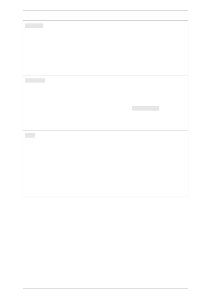

Parameter
Type
Required? Default
Description
max_tokens
integer
Optional
16
The maximum number of tokens
to generate in the completion.
The token count of your prompt
plus max_tokens can't exceed the
model's context length. Most
models have a context length of
2048 tokens (except for the
newest models, which support
4096).
temperature
number
Optional
1
What sampling temperature to
use, between 0 and 2. Higher
values means the model will take
more risks. Try 0.9 for more
creative applications, and 0
( argmax sampling ) for ones with
a well-defined answer. We
generally recommend altering
this or top_p but not both.
top_p
number
Optional
1
An alternative to sampling with
temperature, called nucleus
sampling, where the model
considers the results of the
tokens with top_p probability
mass. So 0.1 means only the
tokens comprising the top 10%
probability mass are considered.
We generally recommend
altering this or temperature but
not both.